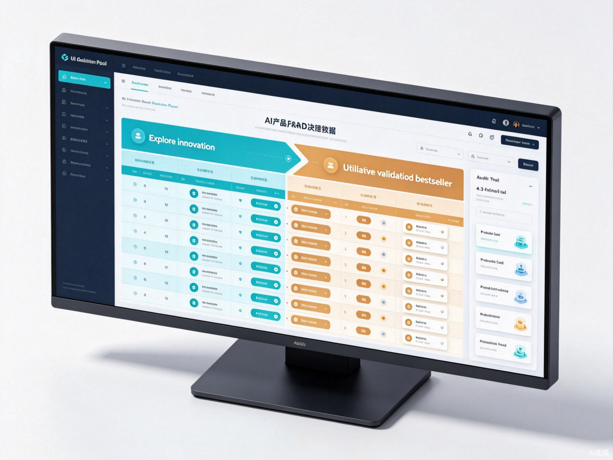

Chapter · 01
认知破局
传统AI选品的战略缺陷与研发死局
探索未来新品 · 复用成熟爆款 · 全域溯源 · 分层决策 · 可迭代进化
CONTENTS · 汇报目录
传统AI选品的战略缺陷与研发死局
双引擎五层递进研发洞察体系
创新/爆款分层量化评审
AI分层研发 VS 传统单一研发
双引擎全链路流转与战略迭代
风控终审与分层物料归档
双引擎分层研发 VS 传统单一研发 终局对比
Chapter · 01
传统AI选品的战略缺陷与研发死局
PROBLEM · 问题诊断
并非设计能力不足，而是研发任务无分层、选品逻辑无拆分、评价体系无适配。
混淆「创新探索」与「爆款复用」两类本质不同的研发场景，用同一套逻辑覆盖全场景。
单权重、单推理链路、单评价体系，放大研发弊端，无法适配两类任务的决策需求。
用成熟爆款的市场验证逻辑评判无历史数据的创新新品，优质新兴机会被误判淘汰。
仅复刻市面爆款成品外观，不拆解底层成功基因，持续继承竞品缺陷。
凭数据存量评判产品价值，不预判未来趋势增量，研发投入空耗。
VICIOUS CYCLE · 闭环死循环
全场景共用选品逻辑
无数据新品淘汰/浅层复刻
无差异化或无验证基础
低价竞争/流量空白
单品亏损/滞销积压
研发无效循环/战略停滞
核心结论：单链路模型无法同时服务创新与爆款两类任务，最终导致研发资源错配与战略停滞。
PAIN POINTS · 行业痛点
把“问题—机制—价值”压缩为一眼可读的决策矩阵，而不是将短表格强行拉满。
传统：创新与爆款共用逻辑，新品被存量数据误杀。
双引擎：独立数据、推理与权重，兼顾增量与盈利。
传统：只复刻外观，持续继承竞品缺陷。
双引擎：拆解产品DNA与因果需求，实现优取劣避。
传统：依赖成熟赛道，缺少新兴趋势捕捉。
双引擎：全域追踪趋势与供需缺口，提前布局蓝海。
传统：标准缺失，成果碎片化、难复用。
双引擎：统一决策模型与日志沉淀，形成研发资产。
VALUE · 核心价值
双向覆盖短期盈利与长期增长。爆款引擎保障当下存量收益，创新引擎布局未来赛道，彻底摆脱同质化低价内卷，构建"稳存量、拓增量"的产品矩阵。
AI替代人工海量趋势筛查、爆款拆解、需求整理、风险研判工作，压缩80%前置调研时间，双路径精准锁定研发方向，大幅减少无效立项、盲目改版、试错损耗。
两类路径均有可溯源数据、可复现推理链路、可复用物料台账、差异化评价标准，形成企业专属分层研发数字资产，彻底告别经验化、碎片化传统研发模式。
Chapter · 02
AI双引擎五层递进研发洞察体系（双路径独立 · 全域溯源版）
DUAL ENGINE · 双引擎差异
EXPLORE ENGINE · 创新引擎
捕捉海外新兴穿搭趋势、生活方式变化、面料技术风口，识别增量萌芽赛道。
新兴赛道取舍拆解趋势背后的隐性诉求、场景痛点、审美偏好，杜绝自嗨式创新。
创新价值定调对比市场供给，挖掘高刚需、低供给空白赛道，锁定独家差异化。
差异化蓝海研判行业创新短板与跟风误区，明确可借鉴趋势与必须规避的设计。
创新避坑整合前四层数据，结合供应链能力，输出原创创新产品方案。
未来产品落地EXPLORE · LAYER 01
数据不是孤立指标，而是对全球趋势、场景变化与技术风口的同步观察。
社媒关键词、行业报告、搜索增量、面料技术与海外人群生活方式，建立连续趋势样本。
趋势热度、增长速率、持续周期、技术支撑与人群渗透，统一转化为可比较评分。
明确哪些趋势值得立项、哪些仍需观察、哪些应主动规避。
EXPLORE · LAYER 02
拆解新兴趋势背后的用户隐性诉求，杜绝无依据的趋势跟风与无效功能堆砌。
新兴用户 隐性刚需层级字段库
EXPLORE · LAYER 03
对比当前市场产品供给，挖掘新兴需求对应的高刚需、低供给空白赛道。
创新赛道 供需空白矩阵
EXPLORE · LAYER 04
研判行业创新短板、趋势跟风误区、早期竞品缺陷，实现精准错位创新。
创新 趋势复用+缺陷规避黑白名单
EXPLORE · LAYER 05
整合前四层数据，结合供应链技术能力，定型原创创新产品方案。
创新产品 全参数结构化定型模型
UTILIZE ENGINE · 爆款引擎
多维度筛选真实优质爆款，剔除泡沫款、短期流量款、衰退款。
成熟赛道取舍打破外观复刻误区，提炼版型、面料、工艺、场景、人群、价格的核心优势参数。
成功基因定调通过Review/Q&A/退货数据，挖掘购买动因与差评痛点，锁定优化空间。
痛点拆解优化制定优势全复用、缺陷全优化、差异化微创新的错位研发策略。
缺陷规避升级整合基因、痛点、竞品优势与供应链能力，输出爆款迭代新品方案。
成熟产品落地UTILIZE · LAYER 01
摒弃"销量高即爆款"的浅层判定，通过多维度数据筛选真实优质爆款。
优质爆款 资质判定数值矩阵
UTILIZE · LAYER 02
打破外观复刻误区，精准提炼版型、面料、工艺、场景、人群、价格的核心优势参数。
爆款 产品基因组库
UTILIZE · LAYER 03
跳出浅层好评统计，通过海量评论、问答、退货数据，挖掘用户购买动因与差评痛点。
爆款 成功基因+缺陷短板二元库
UTILIZE · LAYER 04
结合自身供应链能力，制定"优势全复用、缺陷全优化、差异化微创新"的错位研发策略。
爆款迭代 升级优化方案库
UTILIZE · LAYER 05
整合爆款成功基因、用户痛点优化、竞品错位优势与供应链能力，定型爆款迭代新品方案。
爆款迭代 全参数优化定型模型
CORE ENGINE · 认知计算大脑
用可见的架构场景呈现数据从双路径进入FIOS，再进入统一决策的过程。
趋势势能、隐性需求、供需空白、溯源日志
市场验证、产品DNA、差评痛点、拆解日志
双路径独立推理，标准化收敛为可解释、可留痕的分层决策。
自动联动、自动推理、统一评分，形成可复用企业研发资产。
Chapter · 03
创新/爆款分层量化评审
SCORING · 双模型权重
DECISION · 四级决策
两套权重体系、同一立项标准、分层价值解读
全力投入打版、细化工艺、优先排产、重点打磨
标准流程打版、常规工艺打磨、小批量试产
简化工艺、极小批量试版、严控研发投入
直接驳回立项、停止所有研发投入
Chapter · 04
AI分层研发 VS 传统单一研发
BEFORE · 传统模式
无数据淘汰/浅层复刻
核心结论：单链路模型无法同时服务创新与爆款两类任务，最终导致研发资源错配与战略停滞。
AFTER · 双引擎模式
从Agent执行界面到人工决策节点，让每一次研发操作都可见、可控、可追溯。
趋势、竞品、用户反馈与供应链信息同步入库，先完成“看见”。
分别调用专属推理链完成五层研判、量化评分与风险校验。
立项、打版、生产与数据回流形成闭环，每一步均留有可追溯日志。
Chapter · 05
双引擎全链路流转与战略迭代机制
OPPORTUNITY POOL · 机会池
核心字段
核心字段
DECISION POOL · 最终立项入口
不再是字段罗列，而是用可视化看板呈现“机会汇聚—分层评分—优先级落地”的真实决策过程。

保留机会来源与研判上下文：创新机会关注趋势势能，爆款机会关注市场验证。
价值、结构、市场适配、投资策略和落地优先级，统一转换为管理层可比较的投资语言。
明确重仓、常规、谨慎或终止，并将立项理由与执行结果持续沉淀为研发资产。
STRATEGIC FLYWHEEL · 研发飞轮
挖掘未来增量机会，布局长期产品壁垒
优化成熟机会，保障短期营收盈利
守住市场份额
规避运营风险
规避研发风险
全域沉淀：双路径研发物料、日志、模型持续迭代，形成企业专属数字化研发资产。
Chapter · 06
风控终审与分层物料归档
RISK CONTROL · 分层风控
ARCHIVE · 物料归档
Chapter · 07
双引擎分层研发 VS 传统单一研发
COMPARISON · 终局对比
以五项关键能力对照，清晰呈现从“单链路试错”到“分层研发资产”的升级。
传统：一刀切单链路，战略混淆。
双引擎：探索/利用独立研判，精准适配场景。
传统：单一权重，创新易错杀。
双引擎：创新看趋势缺口，爆款看验证基因。
传统：跟风内卷或创新无依据。
双引擎：原创创新与爆款优化组成产品梯队。
传统：风险预判单一、试错成本高。
双引擎：分层前置风控，降本避险。
传统：只能复刻存量，研发无法沉淀。 双引擎：短期盈利有保障，长期创新有布局，数据、规则与决策经验持续进化为企业研发资产。
SUMMARY · 终极总结
减少无效立项、盲目改版与试错损耗，压缩80%前置调研时间。
AI替代人工海量趋势筛查、爆款拆解、需求整理、风险研判工作。
双路径精准锁定研发方向，兼顾原创创新与爆款优化。
分层前置风控，精准规避创新误区、爆款复刻缺陷与合规风险。
形成企业专属分层研发数字资产，可持续迭代进化。
从单一黑箱输出升级为分场景、可解释、可复核、可迭代的科学化造品系统。
AI双引擎产品智能研发体系 · 探索未来新品 · 复用成熟爆款 · 全域溯源 · 分层决策